Новости и события
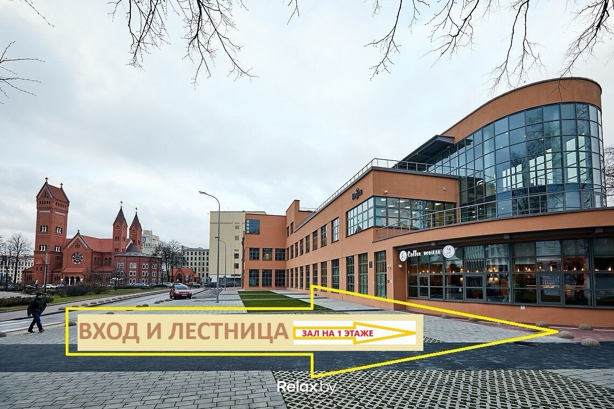
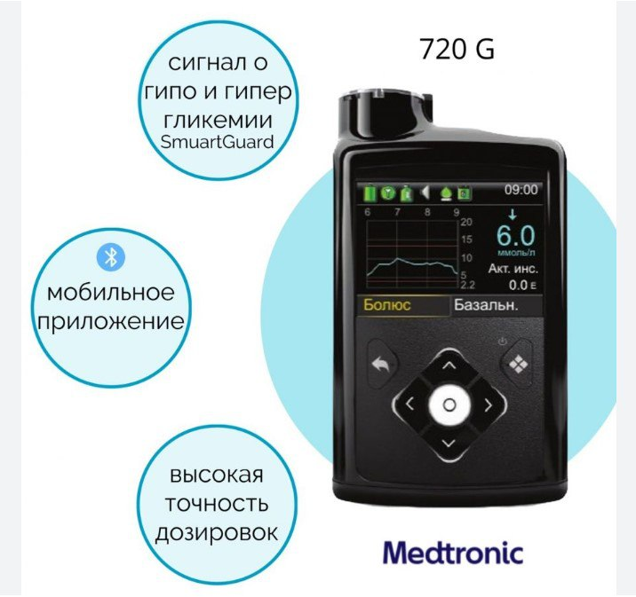
Анонс встречи 22 ноября
Анонс встречи 22 ноября
20.10.2024
🔔Дорогие друзья!
🔊У нас хорошая новость и анонс уникальной встречи!
Мониторинги развиваются, варианты появляются и идут в ногу со временем, а вопросы остаются ежедневно актуальными, особенно если это касается технической части – подключения, настроек, передачи данных и т.д. и т.п. Бесконечно и по кругу, причем у всех, от новичков и до бывалых.
22 ноября, в ПЯТНИЦУ, в 18.00 в малом актовом зале по адресу г.Минск, ул.Свердлова, д.2, этаж 1(вход - см. картинку), СОСТОИТСЯ ВСТРЕЧА с создателем и главным админом той самой группы «Помощь» ЕВГЕНИЕМ НАХОДКИНЫМ
🧲Вы сможете задать свои вопросы и обсудить перспективы новых вызовов!
Тем более, что сейчас кажется к нам придут и новые системы мониторирования😉
Не пропускайте!
Ждем всех!
🖍Для подтверждения участия стандартно пишите на diapeople.bel@gmail.com
🔊У нас хорошая новость и анонс уникальной встречи!
Мониторинги развиваются, варианты появляются и идут в ногу со временем, а вопросы остаются ежедневно актуальными, особенно если это касается технической части – подключения, настроек, передачи данных и т.д. и т.п. Бесконечно и по кругу, причем у всех, от новичков и до бывалых.
🛠А куда мы стучимся, если есть проблема в первую очередь?
Правильно! В группу «Помощь» в телеграм.
22 ноября, в ПЯТНИЦУ, в 18.00 в малом актовом зале по адресу г.Минск, ул.Свердлова, д.2, этаж 1(вход - см. картинку), СОСТОИТСЯ ВСТРЕЧА с создателем и главным админом той самой группы «Помощь» ЕВГЕНИЕМ НАХОДКИНЫМ
🧲Вы сможете задать свои вопросы и обсудить перспективы новых вызовов!
Тем более, что сейчас кажется к нам придут и новые системы мониторирования😉
❗️А ТАКЖЕ! вас ждет презентация тех самых инсулиновых помп, которые едут в Беларусь, от официального представителя.
🎤Проведет ее Владислав Михайлович МОРОЗИК.Не пропускайте!
Ждем всех!
🖍Для подтверждения участия стандартно пишите на diapeople.bel@gmail.com
16 июня 2024 года
Состоялась встреча родительского клуба инициативы ДиаЛюди Беларусь и экскурсия по Косcовскому дворцово-парковому комплексу.
28.06.2024
При участии доктора детского эндокринолога и организатора брестской Школы диабета @shkola_diabeta_brest, Виктории Александровны КОЗЕЛ.
И сложно переоценить важность таких встреч.
ОБЯЗАТЕЛЬНО ПРИСОЕДИНЯЙТЕСЬ!
С нами познавательно, полезно и весело!)
Как это было смотрите по ссылке
Нам всегда есть о чем поговорить!И сложно переоценить важность таких встреч.
ОБЯЗАТЕЛЬНО ПРИСОЕДИНЯЙТЕСЬ!
С нами познавательно, полезно и весело!)

Инструкция по использованию Глюкагона для инъекций USP "Глюгон"
20.03.2024
{kind=link}
{kind=link}
Компания Know Labs собирается подать заявку в FDA для регистрации своего неинвазивного мониторинга глюкозы!
28.02.2024
Для этого, в течение 2024 года будут проведены клинические испытания.
В основе сенсора KnowU - запатентованный радиочастотный датчик, который измеряет уровень глюкозы, быстро сканируя широкий диапазон радиочастот.
Компания уже получила патент, где указан диапазон точности по шкале MARD от 5% до 9,9%. Такая точность сопоставима с точностью инвазивных CGM.
В основе сенсора KnowU - запатентованный радиочастотный датчик, который измеряет уровень глюкозы, быстро сканируя широкий диапазон радиочастот.
Компания уже получила патент, где указан диапазон точности по шкале MARD от 5% до 9,9%. Такая точность сопоставима с точностью инвазивных CGM.
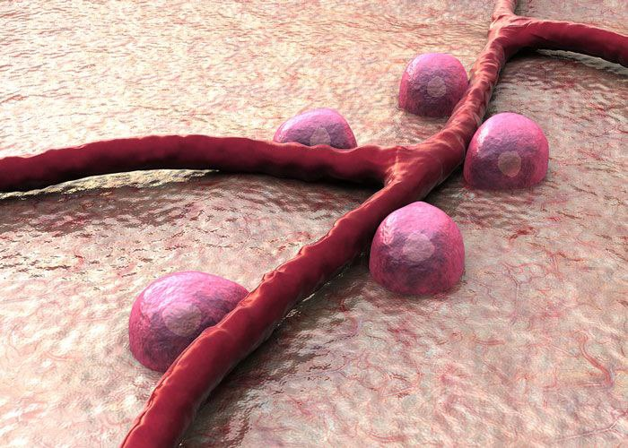
Терапевтическое воздействие на сигнальный путь бета-клеток потенциально может замедлить прогрессирование диабета 1типа!
Терапевтическое воздействие на сигнальный путь бета-клеток потенциально может замедлить прогрессирование диабета 1типа!
27.02.2024
Новое исследование дает больше ясности о возникновении СД1, включая новый механизм, который можно использовать для защиты бета-клеток.
Результаты показали, что бета-клетки могут инициировать ключевые события, которые затем способствуют сбою аутоиммунного механизма. Это подход, меняющий всю парадигму возникнования СД1, говорится в журнале Nature Cell Biology.
Результаты показали, что бета-клетки могут инициировать ключевые события, которые затем способствуют сбою аутоиммунного механизма. Это подход, меняющий всю парадигму возникнования СД1, говорится в журнале Nature Cell Biology.
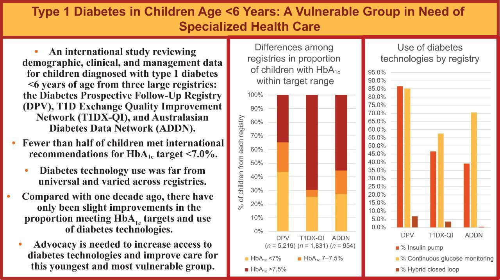
Дети до 6 лет - наиболее уязвимая группа в компенсации диабета 1 типа.
Дети до 6 лет - наиболее уязвимая группа в компенсации диабета 1 типа.
27.02.2024
Такие данные публикает журнал Diabetes Care.
Речь идет о большом международном исследовании, в котором рассматривали демографические, клинические и терапевтические данные более 8000 детей с диагнозом СД1.
В итоге, менее половины детей в возрасте до 6 лет достигли целевого показателя гликированного гемоглобина ниже 7,0%
Речь идет о большом международном исследовании, в котором рассматривали демографические, клинические и терапевтические данные более 8000 детей с диагнозом СД1.
В итоге, менее половины детей в возрасте до 6 лет достигли целевого показателя гликированного гемоглобина ниже 7,0%
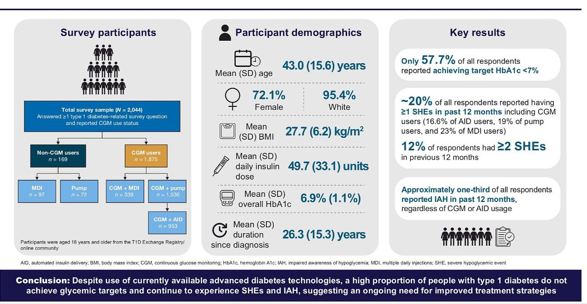
Значительная часть пациентов с диабетом 1 типа не достигает целевых значений и продолжает страдать от тяжелых гипогликемий, несмотря на использование передовых технологий.
Значительная часть пациентов с диабетом 1 типа не достигает целевых значений и продолжает страдать от тяжелых гипогликемий, несмотря на использование передовых технологий.
23.02.2024
Об этом говорится в новом исследовании, опубликованном в журнале Diabеtes Care.
Всего в исследование было включено 2074 взрослых с диабетом 1 типа. 91,7% участников использовали системы непрерывноготмониторинга глюкозы (CGM) . При этом, половина из них были пользователи "петель".
В итоге, только 57,7% всех участников испытания достигли целевого показателя гликированного гемоглобина ниже 7%.
Всего в исследование было включено 2074 взрослых с диабетом 1 типа. 91,7% участников использовали системы непрерывноготмониторинга глюкозы (CGM) . При этом, половина из них были пользователи "петель".
В итоге, только 57,7% всех участников испытания достигли целевого показателя гликированного гемоглобина ниже 7%.
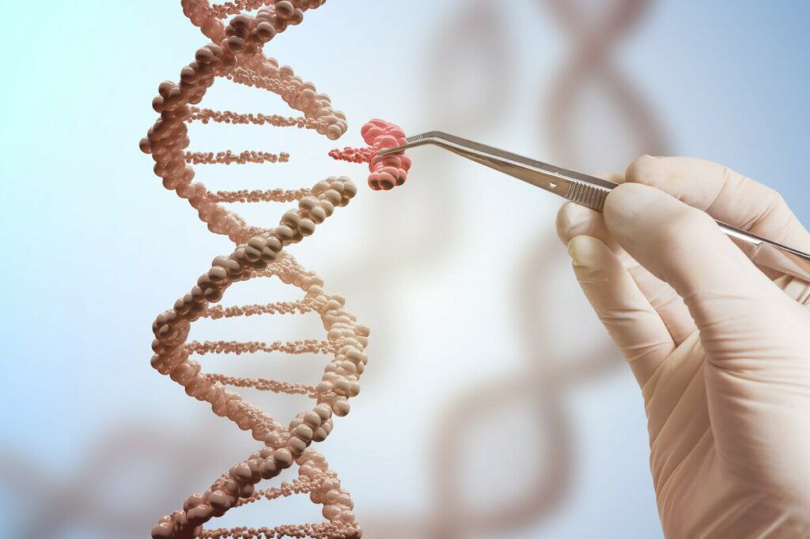
Американская компания Sana Biotechnology добилась независимости от инсулина у приматов после трансплантации гипоиммунных аллогенных островковых клеток, которые не требуют иммуносупрессии!
Американская компания Sana Biotechnology добилась независимости от инсулина у приматов после трансплантации гипоиммунных аллогенных островковых клеток, которые не требуют иммуносупрессии!
20.02.2024
Новые данные доклинических испытаний были опубликованы в журнале Cell Stem Cell.
Речь идет о клетках, которые были выращены из стволовых и генетически изменены, чтобы не провоцировать иммунный ответ. Без инъекций внешнего инсулина уровень С-пептида животных нормализовался и оставался стабильным в течение полугода.
Следующим шагом будет исследование на людях - а именно первая фаза клинического испытания для пациентов с диабетом 1 типа.
Речь идет о клетках, которые были выращены из стволовых и генетически изменены, чтобы не провоцировать иммунный ответ. Без инъекций внешнего инсулина уровень С-пептида животных нормализовался и оставался стабильным в течение полугода.
Следующим шагом будет исследование на людях - а именно первая фаза клинического испытания для пациентов с диабетом 1 типа.
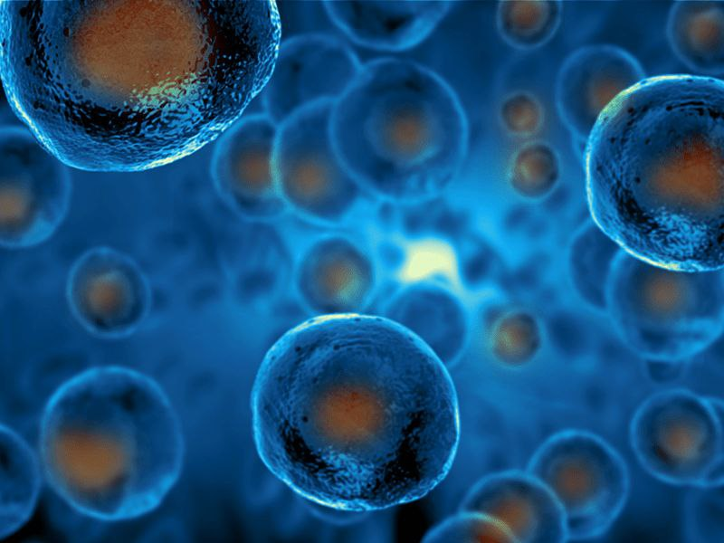
Выращенные бета-клетки будут трансплантированы в руку пациента и начнут вырабатыать инсулин. Такой вид терапии диабета 1 типа может появиться в ближайшем будущем.
Выращенные бета-клетки будут трансплантированы в руку пациента и начнут вырабатыать инсулин. Такой вид терапии диабета 1 типа может появиться в ближайшем будущем.
18.02.2024
Выращенные бета-клетки будут трансплантированы в руку пациента и начнут вырабатыать инсулин. Такой вид терапии диабета 1 типа может появиться в ближайшем будущем.
Новые данные компании Minutia были представлены на конференции Американской ассоциации содействия развитию науки (AAAS), (https://meetings.aaas.org/) которая прошла на прошлой неделе в Денвере.
Исследователи полагают, что новая процедура может освободить пациентов с СД1 от необходимости постоянных инъекций инсулина. Выращенные в лаборатории островковые клетки будут вводится подкожно и возьмут на себя роль поджелудочной железы.
В настоящее время уже проходят клинические испытания, в ходе которых островковые клетки от доноров трансплантируются в предплечья восьми пациентам с СД1.
Все подробности читайте на новостном канале о диабете 1 типа
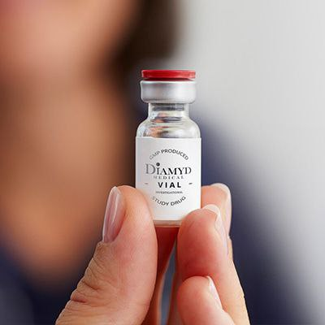
Компания Diamyd Medical получила одобрение FDA на ускоренную процедуру регистрации своего препарата для терапии диабета 1 типа!
Компания Diamyd Medical получила одобрение FDA на ускоренную процедуру регистрации своего препарата для терапии диабета 1 типа!
16.02.2024
Он показал многообещающие результаты в сохранении функции бета-клеток у пациентов с СД1, вплоть до 8 лет после терапии.
Это антиген-специфическая иммунотерапия в настоящее время находится на финальной третьей стадии клинических испытаний, набор пациентов со стажем до 6 месяцев открыт по всей Европе и США.
Препарат показал сохранение выработки собственного инсулина через 30 и 43 месяца после инъекций, а у некоторых пациентов - и до 8 лет.
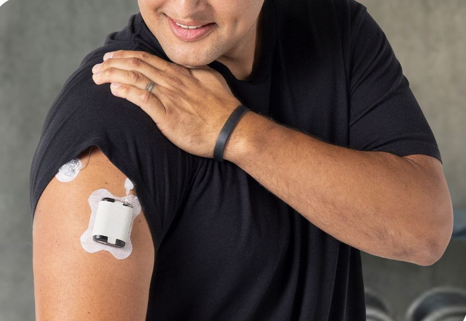
Компания Tandem Diabetes Care объявила о выходе на рынок США своей новой мини-помпы Mobi.
Компания Tandem Diabetes Care объявила о выходе на рынок США своей новой мини-помпы Mobi.
13.02.2024
Она полностью управляется с помощью мобильного приложения и является самой маленькой в мире автоматизированной системой введения инсулина. В июле 2023 года она была одобрена FDA для детей от 6 лет и старше.
Mobi оснащена инсулиновым картриджем на 200 единиц и кнопкой включения помпы. Ее размер вдвое меньше, чем t:slim X2.
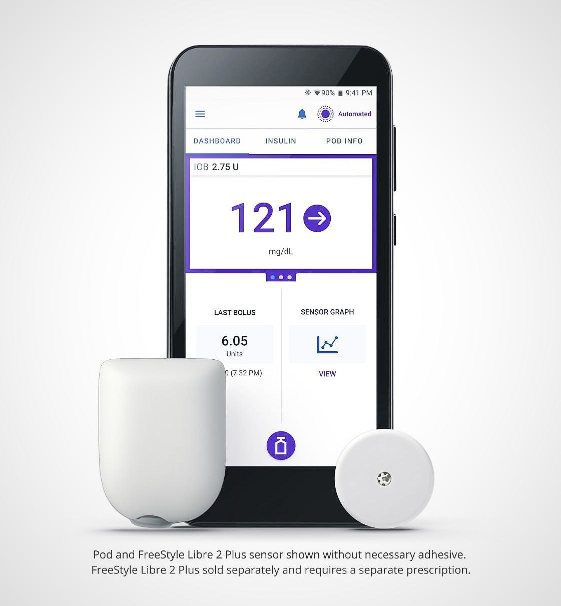
🔘 Omnipod 5 теперь будет работать с сенсором FreeStyle Libre 2 Plus! Компания Insulet объявила о получении европейской маркировки СЕ для интеграции своей петли с Libre2 Plus в Европе.
🔘 Omnipod 5 теперь будет работать с сенсором FreeStyle Libre 2 Plus! Компания Insulet объявила о получении европейской маркировки СЕ для интеграции своей петли с Libre2 Plus в Европе.
08.02.2024
Это одобрение распространяется для детей от двух лет и старше с диабетом 1 типа. До этого момента единственным мониторингом, интегрированным с официальной петлей Omnipod 5 был Dexcom G6.
Ожидается, что первые системы Omnipod 5 с датчиком FreeStyle Libre 2 Plus будут доступны в Великобритании и Нидерландах уже в первой половине 2024 года, а затем появятся и в других странах Евросоюза.
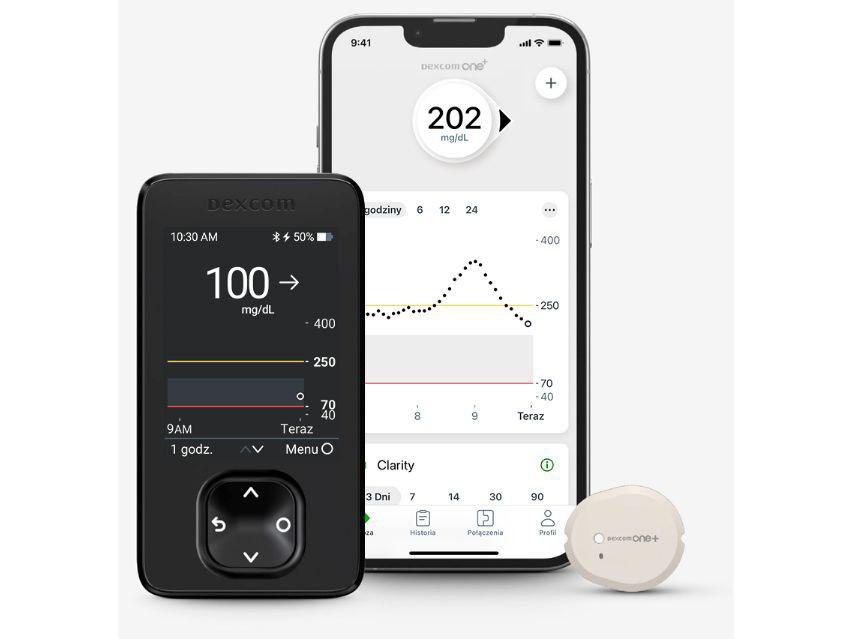
Dexcom представил в Польше свою новую модель своего непрерывного мониторинга глюкозы - Dexcom One+
Dexcom представил в Польше свою новую модель своего непрерывного мониторинга глюкозы - Dexcom One+
06.02.2024
Новая модель внешне и по основным характеристикам является почти полной копией Dexcom G7:
▪ Единый сенсор "all-in-one" без трансмиттера
▪Время "разогрева" от установки до первых показаний всего 30 минут
▪Разрешён для детей от 2 лет
💸Розничная стоимость одного сенсора в Польше составляет 184 злотых (около 42 евро).
Для пользователей смартфонов предусмотрено специальное приложение, которое уже доступно как для систем Android, так и для iOS.
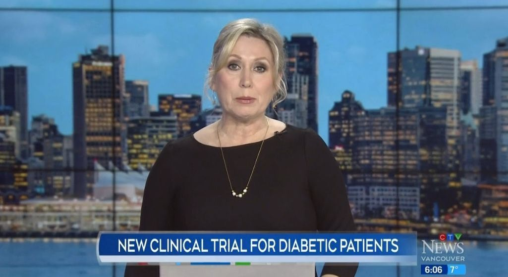
🇨🇦 Новое клиническое исследование уже существующего препарата может помочь пациентам с диабетом 1 типа! В Канаде набирают пациентов для второй фазы испытаний.
🇨🇦 Новое клиническое исследование уже существующего препарата может помочь пациентам с диабетом 1 типа! В Канаде набирают пациентов для второй фазы испытаний.
05.02.2024
Речь идет от препарате Устекинумаб (торговое наименование STELARA).
Данная терапия широко используется для лечения болезни Крона и псориаза. Предыдущие исследования показали, что устекинумаб безопасен и может ослабить атаку на бета-клетки у пациентов с недавно диагностированным СД1. Один из пациентов, принимавший участие в пеюрежнем исследовании, не нуждался в инсулине в течение трех лет, а двое других значительно сократили дозы.
Завершится новая фаза испытаний уже в 2025 году.
Ссылка на репортаж телекомпании CTV News
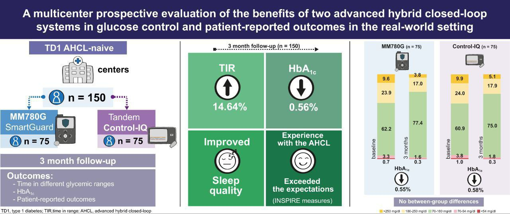
Medtronic 780G Smart Guard против Tandem Control-IQ.
Medtronic 780G Smart Guard против Tandem Control-IQ.
29.01.2024
📊Medtronic 780G Smart Guard против Tandem Control-IQ. В февральском номере журнала Diabetes Care сравнили две наиболее популярные официальные петли. Всего в клиническом испытании приняли участие 150 человек, поровну по 75 участников для каждой из петель.
В итоге, спустя 3 месяца наблюдения, в группе пользователей Medtronic 780G, уровень нахождения в целевом диапазоне (3,9 -10,0 ммоль/л) вырос в среднем на 15,2% - с 62,2% до 77,4%TIR.
В группе пользователей Tandem t:slimX2 время в целевом диапазоне выросло в среднем на 14,1% - с 60,9% до 75% TIR.
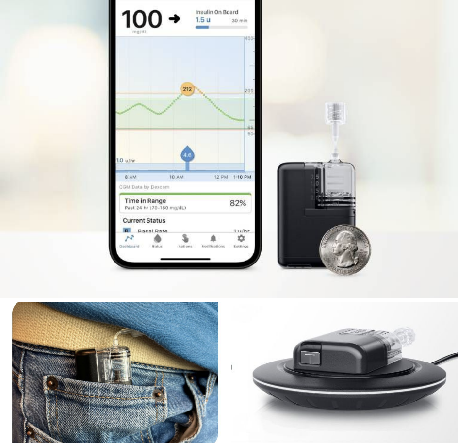
⚡️⚡️FDA сегодня одобрила самую маленькую в мире проводную инсулиновую помпу Mobi - от компании Tandem Diabetes Care!
⚡️⚡️FDA сегодня одобрила самую маленькую в мире проводную инсулиновую помпу Mobi - от компании Tandem Diabetes Care!
11.07.2023
Новая система разрешена детям старше шести лет.
Mobi полностью управляется через мобильное приложение.
Помпа оснащена инсулиновым картриджем на 200 единиц и кнопкой включения помпы. Размер новой Mobi вдвое меньше, чем t:slim X2.
Новая помпа водонепроницаема (IP28), имеет беспроводную зарядку и удаленное обновление программного обеспечения.
Mobi (как и t:slim) использует технологию петли Tandem Control-IQ для автоматической доставки инсулина.